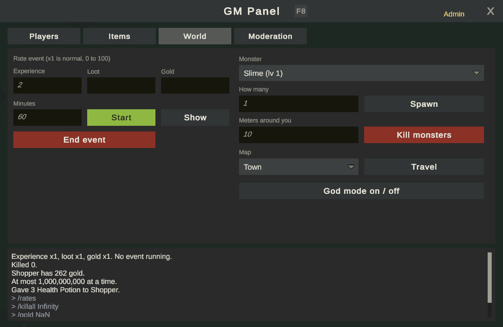
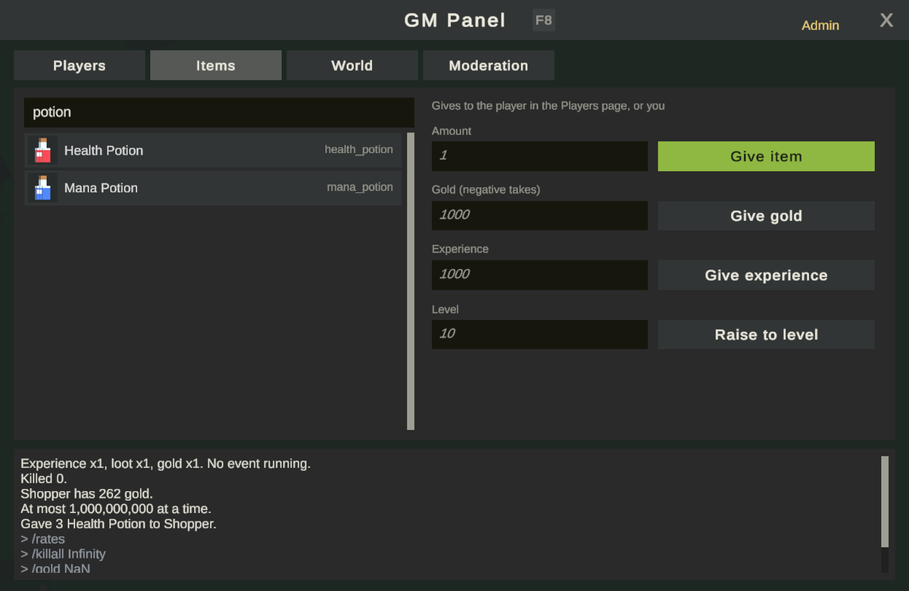
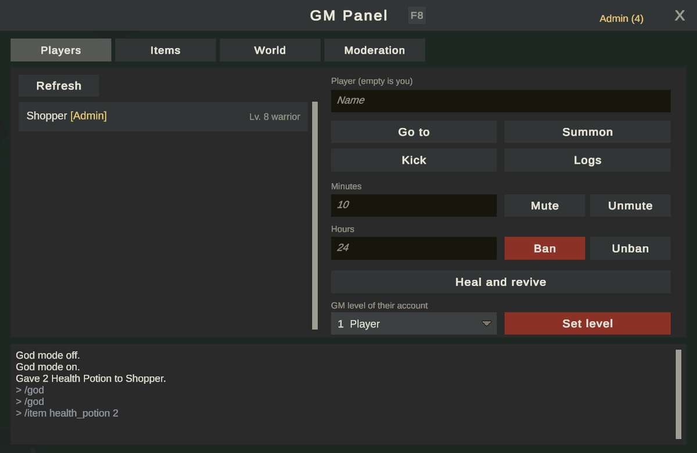

GM 工具
GM 工具让你的工作人员管理和运营游戏：聊天命令、GM 面板、每个账号四个 GM 等级，以及对每条命令的强制审计。本页介绍各个等级及如何授予、面板、命令概要、审计、服务器强制执行的限制，以及单人模式中的作弊。完整的命令列表见 GM 命令。
GM 等级
每个账号都有一个 1 到 4 的 GM 等级，保存在 accounts.Role 中。
| 等级 | 名称 | 默认命令 |
|---|---|---|
| 1 | Player | /help、/report |
| 2 | Moderator | /who、/goto、/boot、/mute、/announce、/reports、/closereport、/logs |
| 3 | Game Master | /summon、/tp、/ban、/heal、/god、/status、/spawn、/killall、/map、/quest、/flag、/trigger |
| 4 | Admin | /item、/gold、/currency、/xp、/level、/points、/skill、/rates、/role、/audit |
一个等级包含其下所有等级的命令。新账号从等级 1 开始。
角色进入地图时，Central 把账号的等级告诉地图。它从不随角色保存，所以无法通过存档伪造等级变更。
分步操作：指定第一位管理员
没有人能在游戏中授予第一个管理员等级，因为只有管理员能更改等级。在数据库中设置一次：
-
创建账号并登录一次，让它存在。
-
在游戏的数据库（SQLite 文件或 PostgreSQL）上运行以下语句，填入账号的用户名：
UPDATE accounts SET "Role" = 4 WHERE "Username" = 'yourname'; -
重新登录。新等级从角色下一次进入地图时开始生效。
数据库的位置参见数据库。
分步操作：在游戏中授予 GM 等级
以管理员身份：
- 在聊天中输入
/role name level，其中 name 是该账号的某个角色，level 是 1 到 4。例如/role Mira 2让 Mira 的账号成为 Moderator。 - 或者打开 GM 面板（
F8），在 Players 中选择该玩家，使用底部的等级控件。
规则：
- 只有管理员（等级 4）能更改等级。无论 Game Settings 怎么设置，
/role始终需要 4。 - 任何人都不能更改与自己同级或更高级别的人的等级、更改自己的等级，或授予高于自己的等级。
- 降低等级会断开该账号的连接，让它以新等级重新进入。提高等级从它下一次进入地图时生效。
/role仅在线有效。
修改命令所需的等级
在 KitARPG > Game Settings 的 Commands 部分：
| 字段 | 作用 | 默认值 |
|---|---|---|
Single Player Commands（singlePlayerCommands） |
在单人世界中，玩家可以像作弊一样使用所有 GM 命令。在线时由账号的等级决定 | 开 |
Gm Command Levels（gmCommandLevels） |
每条命令要求的 GM 等级（与默认值不同时）。每个条目有 Command（不带斜杠的名称，例如 item）和 Level（1 到 4） |
空 |
例如，添加一个 announce 等级 3 的条目，这样 Moderator 就不能发公告。条目写的是命令名，不是它的别名。
使用命令
命令在聊天中输入。聊天不认识的内容都会发送到服务器，如果账号等级允许，服务器会执行它。/help 只列出你的等级可以使用的命令及其用法。
没有该等级的人会看到 "Unknown command"，就像这条命令不存在一样。
作用于玩家的命令使用角色的名字。大多数命令末尾可以带一个可选的 player；不带时作用于你自己。
常见示例：
/who
/goto Mira
/mute Spammer 30
/announce Server restarts in 10 minutes
/heal
/item health_potion 20 Mira
/rates exp 2 60
/rates off
/logs Mira item.trade
完整列表及用法见 GM 命令。
GM 面板



按 F8 或输入 /gm（或 /panel）。面板只对等级 2 及以上开放，等级降低时会自动关闭。
每个按钮和标签页只在你的等级允许其命令时显示。服务器把允许的命令列表发送给所有者；面板只用它来决定绘制什么。面板发送的命令行与聊天发送的相同，服务器对每一条都检查账号的等级。被修改的客户端打开面板也得不到任何好处。
| 标签页 | 内容 |
|---|---|
| Players | 此地图服务器上的玩家，显示等级、职业、GM 等级以及是否死亡或被禁言。前往、召来、踢出、禁言和解除禁言、封禁（需确认）和解封、治疗（管理员）、查看日志，以及管理员的等级控件 |
| Items（管理员） | 搜索 Game Database，向选中的玩家或你自己发放物品、金币、经验或等级 |
| World（管理员） | 倍率活动、生成怪物、杀死周围的怪物、前往某张地图、无敌模式 |
| Moderation | 面向所有人的公告（需确认）、未处理的举报、关闭举报，以及按类型查看日志 |
点击一位玩家会填入目标；没有目标时，按钮作用于你自己。回复，包括 Central 通过聊天发送的回复（举报、日志、封禁），显示在底部的框中，它保留最近 60 行。
面板最多一次突发发送 6 个请求，之后每秒 4 个，并丢弃超过 300 个字符的行。
每条命令都遵循的规则
- 任何人都不能作用于同级或更高级别的人。 任何人都不能踢出、禁言、召来或封禁与自己同级或更高级别的人。
- Central 会再次检查。 对于封禁、倍率活动、举报、日志和等级变更，Central 会用地图要求的等级检查账号的等级，并且绝不接受低于 2 的等级。
- 禁言持续有效。 禁言是角色上的一个标记，所以在切换地图和重新连接后仍然有效。
- 限制。 服务器限制一条命令能做的事：
| 限制 | 值 |
|---|---|
每条命令的物品数（MaxItems） |
9,999 |
每条命令的金币或货币（MaxGold） |
1,000,000,000 |
每条命令的经验（MaxExperience） |
1,000,000,000 |
属性点或技能点（MaxPoints） |
1,000 |
状态秒数（MaxStatusSeconds） |
3,600 |
/killall 范围（MaxKillRange） |
100 米 |
禁言分钟数（MaxMuteMinutes） |
525,600（一年） |
带小数的数字拒绝 NaN 和 Infinity。
审计
每条等级 2 或以上的命令都会写入 gm_audit 表，无论它是被执行还是被拒绝：时间、地图、账号、角色、等级、命令、完整的命令行、目标、是否被允许以及回复。超出账号等级的尝试也会被记录为已拒绝。该表独立于游戏日志，且永不清理。
没有记录，就没有命令。 地图把每一行保存在内存和磁盘上（地图服务器持久数据文件夹中的 gm-audit-<map>.json），直到 Central 确认它已写入数据库，每 3 秒以及重新连接时重试。如果 Central 未连接，或者有超过 500 行在等待确认，GM 命令就不会执行。
/role 与等级变更在同一个操作中保存。
用 /audit [player]（管理员）或面板中的 GM audit 按钮查看审计。每条命令也会以 gm.command 写入游戏日志，/logs 会显示它。
单人模式与 MMO
| 单人模式 | MMO | |
|---|---|---|
| 等级 | Single Player Commands 开启时为 4，作为作弊 | 账号的等级 |
| 审计 | 在存档的 gm_audit 表中 |
在 Central 的 gm_audit 表中 |
| 仅在线命令 | /ban、/report、/reports、/closereport、/logs、/role、/audit 不可用 |
全部可用 |
安全
命令位于 KitARPG.Server 程序集中，所以 MMO 客户端构建中不包含其中任何一行。网络上只有 PlayerGm：玩家的 GM 等级（只发送给其所有者）、请求和回复。参见安全。
从仅限服务器的程序集中添加你自己的命令。参见代码中的 GM 命令。
常见错误
- 管理员看到 "Unknown command"。 等级从下一次进入地图时生效。切换地图或重新登录。
- GM 命令不再生效。 Central 宕机或无法访问，所以审计无法确认。在 Play & Servers 中检查服务。
/role被拒绝。 你在修改自己、与你同级的人，或者授予高于你的等级。- 玩家在单人模式中作弊。 关闭 Single Player Commands。